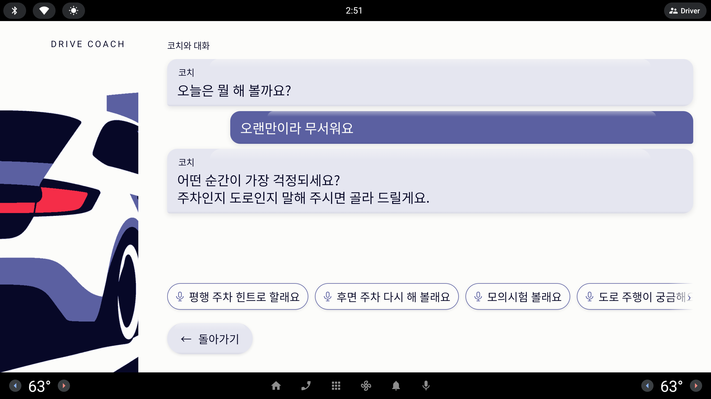
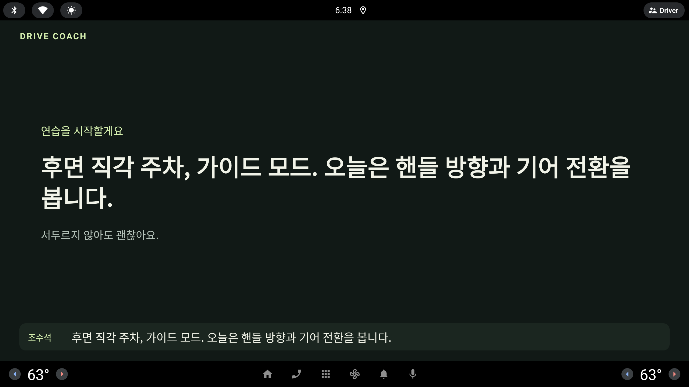
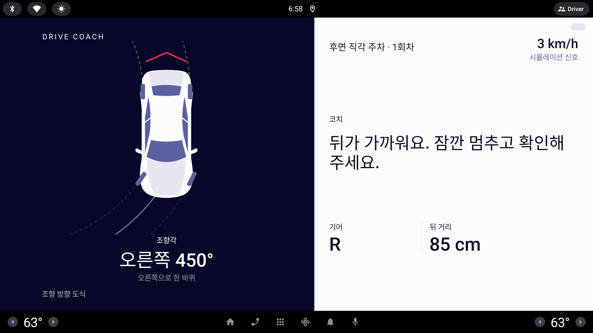
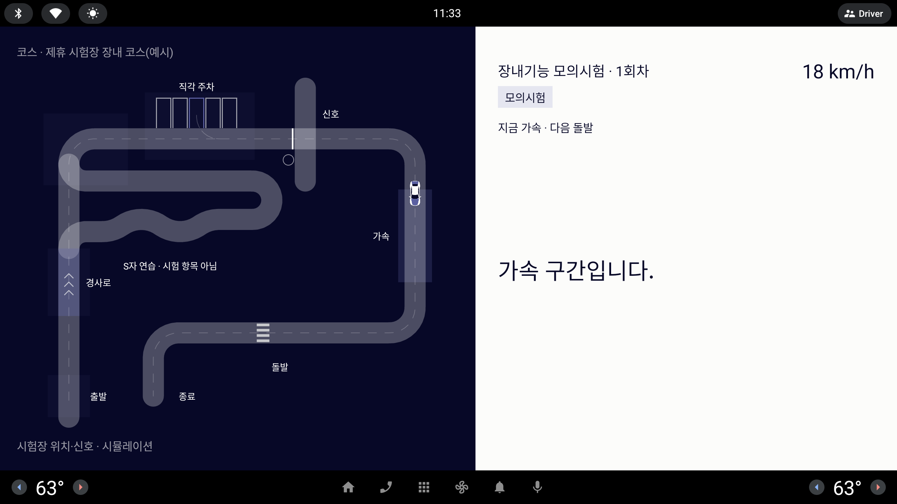

왜 필요한가
30.2%①
차량 물적 사고 10건 중 3건이 주차 중 —
그 주차 사고의 53.8%가 후진
그 주차 사고의 53.8%가 후진
41%②
초보운전자 첫해 사고 중
처음 100일 안에 난 비율
처음 100일 안에 난 비율
50~60만 원③
학원 도로연수 10시간 — 혼자 연습할 도구가 없다
“장롱면허 10년차 아내를 옆에서 가르치다
둘 다 힘들었다.” — 발표자의 계기
둘 다 힘들었다.” — 발표자의 계기
가장 사고가 많은 순간을,
화내지 않고 반복해 줄 조수석이 없다.
화내지 않고 반복해 줄 조수석이 없다.
초보·장롱면허 운전자를 위한 AAOS 운전 연수 어시스턴트
드라이브 코치 — 화내지 않는 조수석
[팀명] · [발표자]
두려운 상황을 과제로 쪼개고, 차량 신호로 과정을 측정해 도움을 줄여 간다.
과제 18주차 4도로 주행 6점검 2지식 6
×가이드→힌트→평가— 도움을 줄여 간다
연습 여정
01
대화로 과제 고르기

“오랜만이라 무서워요” → 과제·모드 제안
AI 코치정차 중
02
브리핑

무엇을 볼지 먼저 말해 준다
벨트시동
03
연습 · 후면 주차

틀린 순간엔 규칙이 바로 말한다
속도조향기어
04
회차 판정

점수 대신 판정 네 줄 + 추정 궤적
정차회차 멘트
05
리포트 · 진단서

무엇이 실신호인지 배지로
도어공유 · 예시
06
시험장 모의시험

장내 코스 구간 감점과 합격선
지시등시험장 · 시뮬